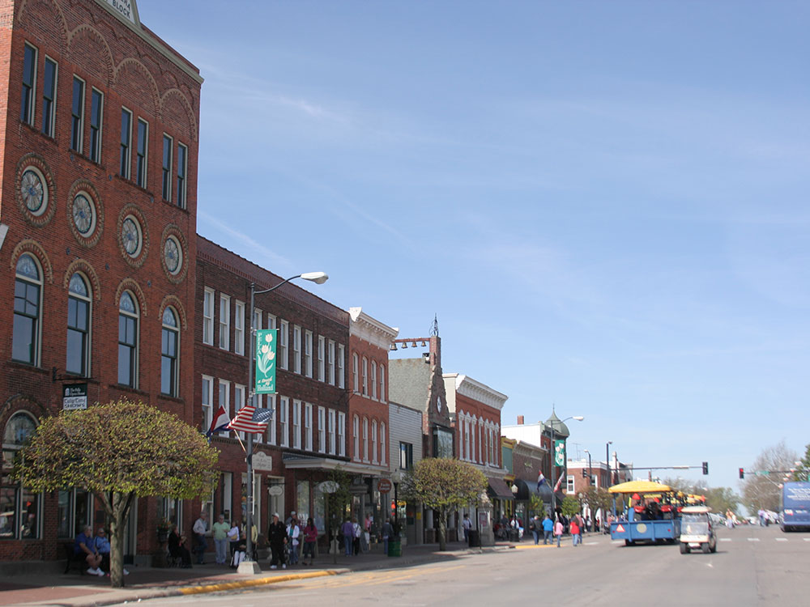
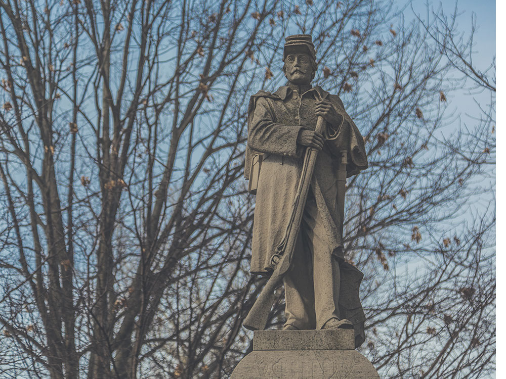
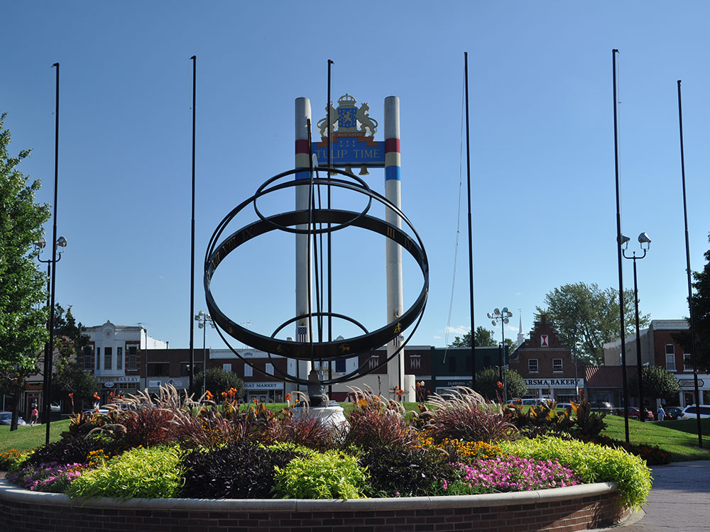
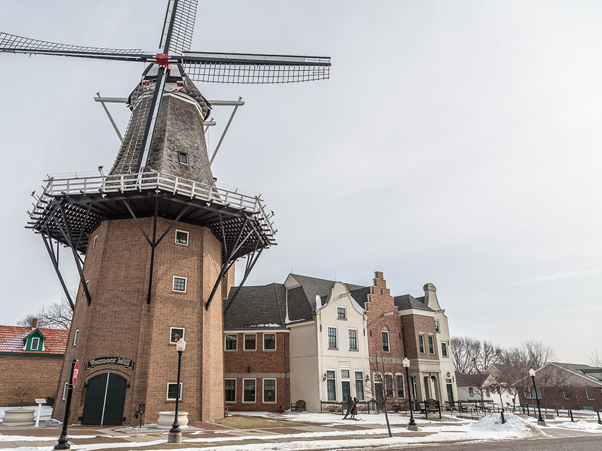
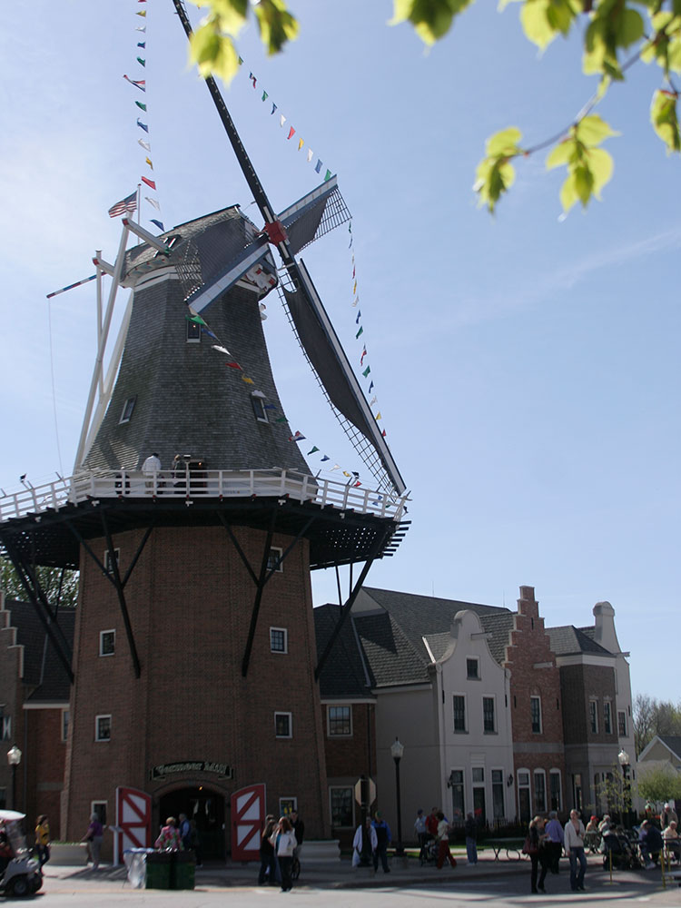

City founded by immigrants from the Netherlands and home to a number of local events and architectural sites
General Information
Individual attractions, shops, museums, and the Vermeer Windmill maintain their own operating hours
Individual attractions may charge admission
How to Get There
From Des Moines (42 mi): Take I-235 E to IA-163 E, continue southeast toward Pella, then follow the signs into downtown Pella and the city's Dutch-inspired historic district.
Overview
Pella is a small city in central Iowa that was founded in 1847 by Dutch immigrants and is famous for its Dutch heritage, its Tulip Time festival each May, and the Vermeer Mill, the tallest working windmill in the United States. Its downtown has Dutch-style buildings, a canal, and a mix of shops and bakeries, and it is home to the headquarters of two well-known companies, Pella Corporation, the window maker, and Vermeer Corporation, a maker of agricultural and industrial equipment. The name "Pella" comes from a Biblical city of refuge.
Visitors come to Pella for Tulip Time, for the Vermeer Windmill and Historic Village, for Dutch pastries such as Dutch letters from local bakeries, and for the lakes and trails of nearby Lake Red Rock, the largest lake in Iowa. It is a charming and quiet place for a day trip or weekend from Des Moines, about 45 minutes away.
History
In 1847, about 800 Dutch immigrants led by the minister Hendrik Scholte left the Netherlands because of religious disagreements with the state church and economic hardship and settled on the Iowa prairie, naming their new town Pella. They built sod houses and then brick homes and businesses, and Pella became a center of Dutch culture and agriculture in the Midwest. Central College, a liberal arts college, was founded in 1853, and the city grew through the twentieth century with companies such as Pella Rolscreen and Vermeer. The Tulip Time festival began in 1935 to celebrate the city's Dutch heritage and has been held every year since, apart from a few interruptions.
Sightseeing and Popular Landmarks
The Vermeer Mill is a working 1850s-style Dutch windmill that stands more than 120 feet tall, and it is part of the Historic Village, a collection of historic buildings that include the Scholte House Museum and the Pella Historical Museum. The Molengracht Plaza has a canal with shops and restaurants, and the Klokkenspel, a musical clock tower, performs at set times with figures from Dutch history. The Pella Opera House, built in 1900, is a historic theater, and the Vermeer Museum and Global Pavilion is also nearby.
Culture and Museums
The Pella Historical Village, with 20 buildings, shows Dutch and pioneer life, and the Scholte House Museum was the home of the town's founder. Tulip Time in May features parades, Dutch dancing in wooden shoes, and thousands of tulips, and the Pella Opera House and Central College host concerts and plays. Local food traditions include Dutch letters (a pastry in the shape of the letter S), pea soup, and bologna, and the Jaarsma Bakery is a local landmark.
Parks
Lake Red Rock, a reservoir created by the Red Rock Dam, is the largest lake in Iowa and offers boating, fishing, camping, and a 15-mile Volksweg Trail. Big Rock Park and Vermeer Park are good for picnics and walks, and the Volksweg Trail connects Pella with Lake Red Rock. Nearby, the Whitebreast Creek and the Marion County parks have additional trails.
Seasons and Weather
Pella has a humid continental climate. Summers are warm and humid, with highs in the 80s°F, and winters are cold, with highs in the 30s°F and about 30 inches of snow. Spring is the most popular time to visit because of Tulip Time in early to mid May, and fall color around Lake Red Rock is also nice. Hotels fill quickly during the festival, so reservations should be made months in advance.
Things to Do
Experience Iowa's Dutch Heritage Capital
Pella is a charming city in central Iowa known for its rich Dutch heritage, beautiful architecture, colorful tulip displays, and welcoming small-town atmosphere. Founded in 1847 by Dutch immigrants seeking religious freedom, Pella remains one of the most distinctive cultural destinations in the Midwest and attracts visitors throughout the year with its historic sites, festivals, shopping, and outdoor recreation opportunities.
Visit the Vermeer Windmill and Historic Village
One of Pella's most famous attractions is the Vermeer Windmill, the tallest working grain windmill in the United States. Located within the Pella Historical Village, the site features historic buildings, traditional Dutch architecture, exhibits, and demonstrations that showcase the city's unique heritage.
Explore Downtown Pella
Downtown Pella features Dutch-inspired storefronts, bakeries, boutiques, cafés, and specialty shops. Visitors can enjoy authentic Dutch pastries, browse local stores, and admire architectural details that reflect the city's European roots.
Attend the Tulip Time Festival
Held each spring, the Tulip Time Festival is Pella's signature event and one of Iowa's most popular festivals. Thousands of blooming tulips, traditional Dutch costumes, parades, music, dancing, and cultural demonstrations transform the city into a vibrant celebration of Dutch heritage.
Enjoy Lake Red Rock Recreation
Located just outside Pella, Lake Red Rock is Iowa's largest lake and offers boating, fishing, kayaking, swimming, camping, hiking, birdwatching, and scenic shoreline views. The lake is a popular destination for outdoor enthusiasts year-round.
Top Trails
Volksweg Trail
Length: Approximately 17 miles
Elevation Gain: Minimal
Difficulty: Easy
This paved multi-use trail connects Pella with other communities around Lake Red Rock. It is popular for walking, running, cycling, and enjoying views of Iowa's countryside and recreational areas.
Big Rock Park Trails
Length: Approximately 2 miles of trails
Elevation Gain: Minimal
Difficulty: Easy
Located within Pella, Big Rock Park offers wooded walking trails, scenic overlooks, picnic areas, and opportunities for wildlife observation in a peaceful natural setting.
Lake Red Rock Trails
Length: Variable distances available
Elevation Gain: Minimal to Moderate
Difficulty: Easy to Moderate
Several trail systems around Lake Red Rock provide access to woodlands, shoreline habitats, prairie areas, and scenic overlooks. Popular activities include hiking, cycling, birdwatching, and photography.
Historic Pella Walking Tour
Length: Approximately 1 to 2 miles
Elevation Gain: Minimal
Difficulty: Easy
A self-guided walk through downtown and the historic district allows visitors to explore Dutch architecture, historic buildings, gardens, museums, and cultural landmarks while learning about Pella's immigrant history.
Sources: Pella Convention and Visitors Bureau information regarding Dutch heritage attractions, Tulip Time Festival, Vermeer Windmill, downtown shopping, and local cultural sites. https://www.visitpella.com
Additional information verified through Iowa tourism and Marion County recreation resources covering the Volksweg Trail, Lake Red Rock, Big Rock Park, and outdoor recreation opportunities in and around Pella.
This article uses material from Wikipedia as well as information from official tourism and institutional sources. Key references include Pella Convention & Visitors Bureau, Pella Tulip Time, Pella Historical Society, Lake Red Rock, Iowa Tourism, and National Weather Service Des Moines. Wikipedia material is from the article "Pella, Iowa", and is available under the Creative Commons Attribution-Share-Alike License 3.0.



.jpg){kind=link}



.jpg){kind=link}
